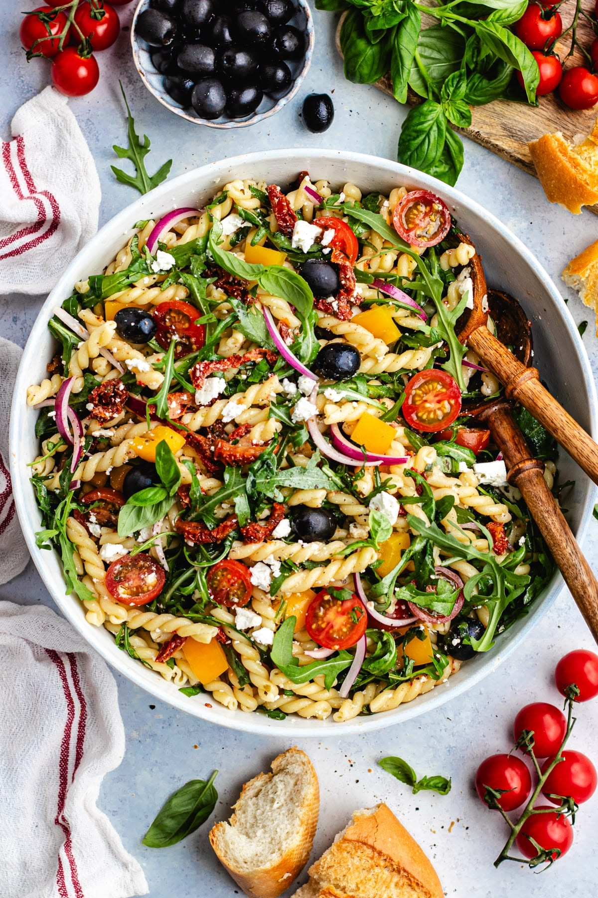
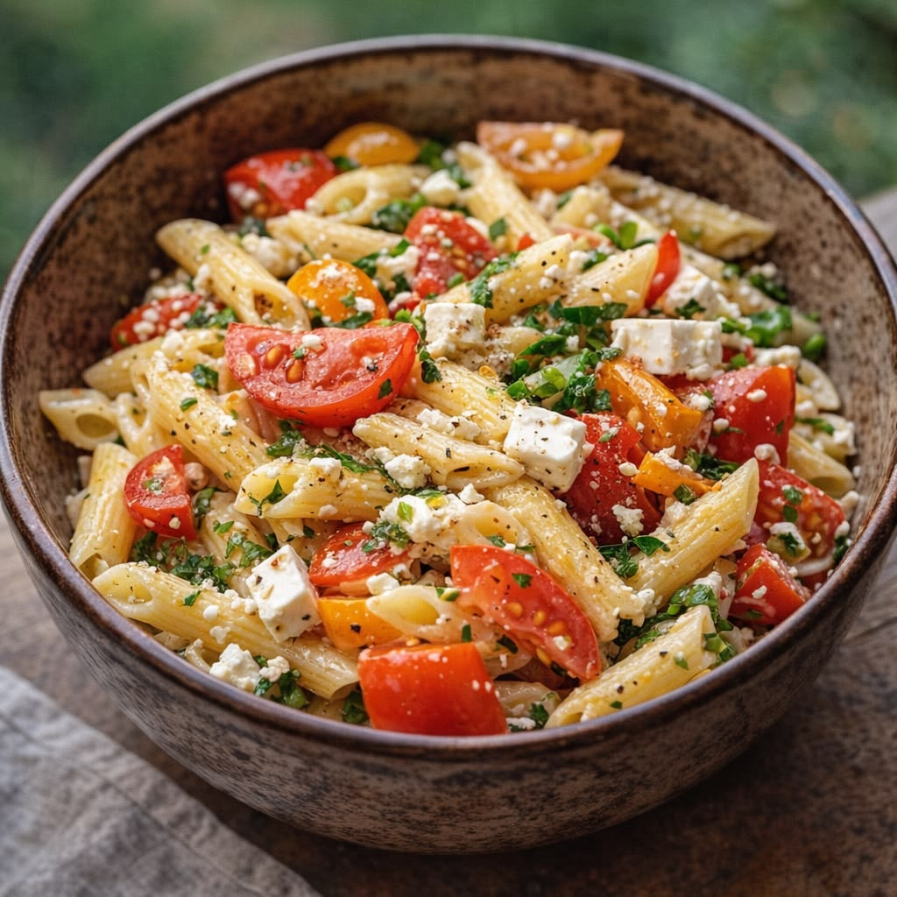

Salade de pâtes bio aux légumes d’été
Ingrédients
- 200 g de pennes
- 1 courgette
- 1 petite aubergine
- 1/2 poivron jaune
- 5 ou 6 tomates séchées
- 12 olives noires
- 4 cuil. à soupe d’huile d’olive
- 1 cuil. à soupe de vinaigre balsamique
- 1 cuil. à soupe Mélange pour Pâtes
- 2 cuil. à soupe Oignons frits
Préparation
-
Préparer les légumes : Éplucher les carottes et le panais,
laver la courgette, puis couper tous les légumes en petits morceaux.
Faire rôtir les légumes : Préchauffer le four à 200 °C.
Disposer les légumes sur une plaque, ajouter 20 ml d’huile d’olive,
les herbes de Provence, du sel et du poivre. Enfourner pendant 25 à 30 minutes.
Cuire les pâtes : Faire cuire les 180 g de pâtes dans une casserole d’eau bouillante salée,
selon le temps indiqué sur le paquet, puis les égoutter.
Préparer la vinaigrette : Mélanger les 20 ml d’huile d’olive restants
avec les 18 ml de vinaigre balsamique, du sel et du poivre.
- 2 cuil. à soupe Oignons frits